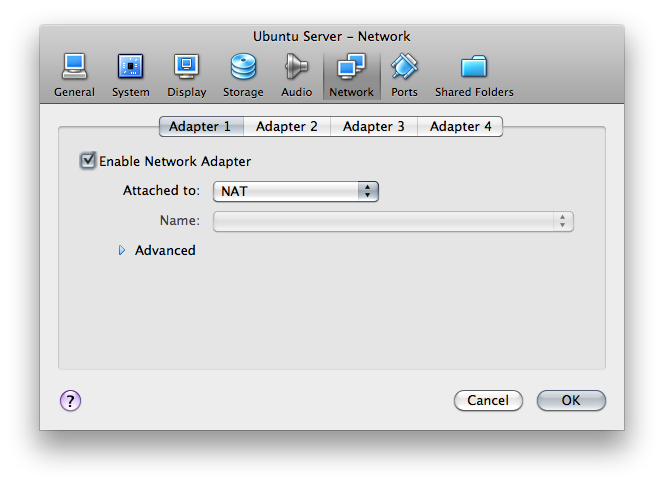
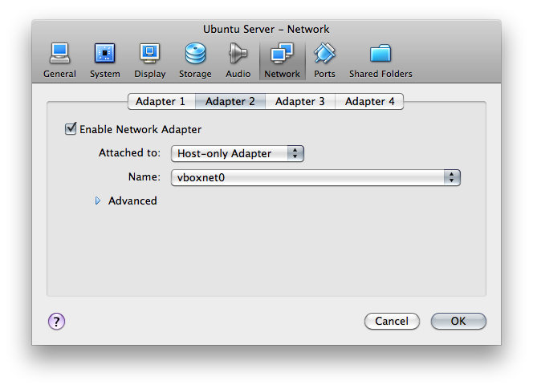
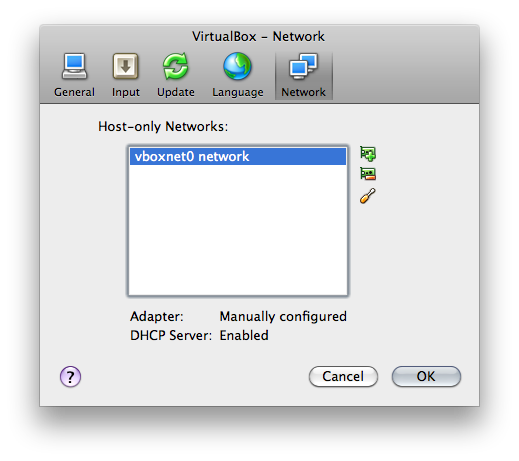
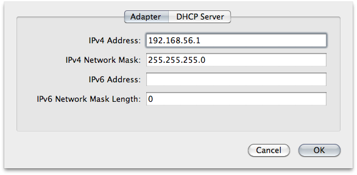
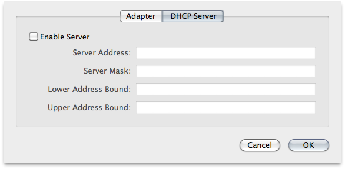

I’ve been playing around with VirtualBox lately, and it’s pretty nifty. Initially I just used it to set up an Ubuntu machine so I could easily run GnuCash on my MacBook, but lately I’ve decided to start using it at work, too. I’ve got lots of plans: figure out how to use Chef, set up my own Hudson server, get a MongoDB cluster running, etc. I’d like all of these machines to be able to access the internet for downloading packages and the like, and I also want to be able to access them easily from my host machine. I don’t want these servers to be accessible from anywhere else on the network, however; these are just for me to experiment with for the time being. After banging my head on this for a little while, I think I’ve finally hit upon a (the?) solution.
Just for completeness’ sake, my host is Mac OS X and my guests are all Ubuntu boxes, so any system-specific instructions here are going to have a UNIX orientation. You have been warned.
Step 1: Access the Internet from the Guest
Set up one of your guest machine’s networking adapters to NAT. This is really easy, since it’s the default.

This will allow the guest system to access the broader internet through your host’s connection. You’ll be able to download packages, check email; whatever. Nobody outside sees anything of your guest system; as far as they’re concerned, it doesn’t exist. However, you cannot access any guest resources from your host machine, nor can any guest machines access each other. Yet.
Step 2: Access the Guest from the Host (and Other Guests)
We’ll need to add another network adapter to your guest machine, but this time, it’ll be a Host-Only Adapter. By using this type of adapter, you’ll be able to access a private, virtual network consisting solely of your host and any guests. Any of the member machines can access each other, but nothing outside of this self-contained “network in a box” can get in.

VirtualBox can create several of these virtual host-only networks (it’s what the “Name” field refers to in the Network Adapter Setup screen above). You can configure these in the VirtualBox Preferences; there should be one already created for you called vboxnet0 network.

Click on the “Edit” button for your Host-only network; you’ll see a dialog like this:

Take note of the adapter’s IP address (192.168.56.1 here); that’s
the address at which your guests can access the host.

By default, there’s a DHCP server set up on the network. Since we’re going to be assigning static IP addresses, we don’t really need this, so you can uncheck the “Enable Server” box on the DHCP configuration panel.
Step 3: Configure Guests
We need each of the guests to have a static IP address on the host-only network. Log in to your Ubuntu guest and issue the following command:
ifconfig eth1 192.168.56.101 netmask 255.255.255.0 up
(Use whatever IP on your host-only network you like, of course.) This binds a network interface to one of the IP addresses on your host-only network (eth0 was bound to the NAT adapter). Now you should be able to SSH into your guest from your host (for example) using this IP address.
This is just temporary, however; once you reboot, this configuration
will disappear. To make it permanent, add this to your
/etc/network/interfaces file (as root):
# The host-only network interface
auto eth1
iface eth1 inet static
address 192.168.56.101
netmask 255.255.255.0
network 192.168.56.0
broadcast 192.168.56.255
Reboot, and this interface should now show up when you type ifconfig.
Step 4: Make Networking Easier with /etc/hosts
Remembering IP addresses is a pain; we’d much rather use machine
names. Fortunately, we don’t need to bother with a DNS server, since
/etc/hosts makes this trivial. Just edit the file (as root)
adding lines like the following:
192.168.56.101 myserver1
192.168.56.102 myserver2
… and so on. You can do this on the host as well as on the guests.
This makes it really simple to access any machine on the host-only
network. Now you can just do something like ssh myserver1 instead
of ssh 192.168.56.101.
And that ought to do it.